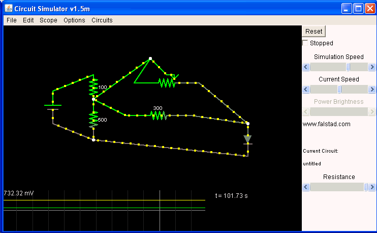

Purpose
Get more light where you need. At my desk I have sufficient light but sometimes I need more. Why not buying a desk lamp? Well, my desk is small and I didn't found something that has low surface (can't use the "claw" like version, desk side is too thick) and that fills my need:- No or barely no space wasted on my small table
- Please, no additional wallwart. I have enough under my desk so let's use batteries (anyway the light will only be on from time to time)
- Articulated arm to allow to have the light right where you want it
Solution, use some power white led powered by a battery, make a articulated arm from electrical strong wires and case the on/off and power potentiometer in the side of the top shelf itself.
Parts
- Power white led (12-14v, 60 mA) http://akizukidenshi.com/catalog/g/gI-03946/
- 2x 9V batteries in serie (= 18v)
- Resistor scale to get 15v OR LM317 ?
- To save some amps, I turned to LM317 : with R1=100ohm and R2=1000ohm, a Vin of 18V becomes a nice 14- Volt.Perfect!
- Slide potentiometer for the power
- I put it in parallel with a 300 ohm resistor. Result is not linear but gives a contol on the power on the last part of the rail (last 15% I would say). With the slide to 0, the 300 ohm feeds the led with a nice 60%20 mA which is the current for the which it's rated. Since I have no 300 ohm resistor, I used a small 1kOhm pot I had and I measured it to 300 ohm. I could then fine tune the final current if needed.
Schema
Problem : slide potentiometer I have are way too strong, like 100 kOhm. So I use 2 parallel resistor to lower the value. It's not perfect since relevant amp change can be seen only on extreme lower end of the slide but ... well, I want to try and use it :PParallel resistor ohm rule : R = (R1 %20 R2) / (R1 * R2)
NOTABENE : finally it's a LM317 I use but idea is still valid.

Circuit :
$ 1 5.0E-6 10.20027730826997 50 5.0 50 v 144 256 144 192 0 0 40.0 18.0 0.0 0.0 0.5 r 224 160 224 208 0 100.0 r 224 208 224 288 0 500.0 r 288 240 416 240 0 300.0 174 304 176 432 176 0 100000.0 0.0050 Resistance d 528 256 528 320 1 0.805904783 w 144 192 224 160 0 w 224 288 144 256 0 w 224 208 288 240 0 w 416 240 528 256 0 w 528 320 224 288 0 w 432 176 528 256 0 w 224 208 336 128 0 w 336 128 368 160 0 w 336 128 304 176 0 o 5 64 0 35 5.0 0.1 0 -1
Pictures

The circuit : one can see the 100kOhm slide, the 1kOhm pot set to 300ohm, the LM317 on the right hand and the little basket on the right holds the 2 9V batteries.

The led module itself. Notice how it's held by strong copper wire (drive the power, hold it and make a nice articulated arm).